sunburst-simple · son
GEÇTİ · kapı farkı %0.004 · kapı SSIM 0.99876 · ham fark %0.323 · ham SSIM 0.99771 · aynı Gauss çekirdeği σ=0.8 · yapısal 1/1
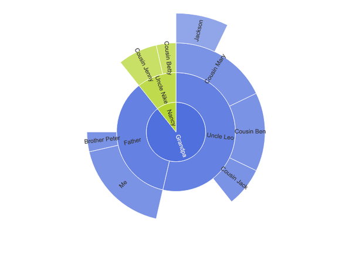
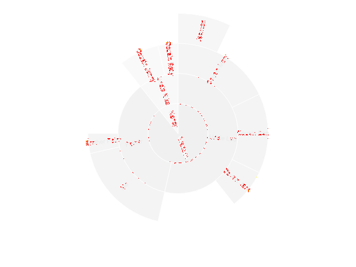
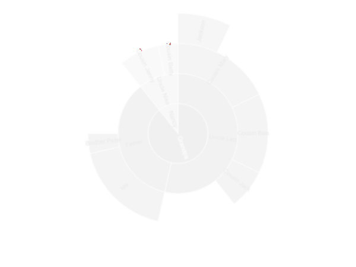
pixelmatch 0.1 · değişen piksel ≤ %1 · SSIM ≥ 0.99. Yoğun tipografi profili varsa değişmeyen eşikler iki görüntüye de aynı Gauss çekirdeği uygulandıktan sonra değerlendirilir; ham metrik ve ham fark daima gösterilir.
GEÇTİ · kapı farkı %0.004 · kapı SSIM 0.99876 · ham fark %0.323 · ham SSIM 0.99771 · aynı Gauss çekirdeği σ=0.8 · yapısal 1/1



GEÇTİ · kapı farkı %0.000 · kapı SSIM 0.99973 · ham fark %0.019 · ham SSIM 0.99961 · aynı Gauss çekirdeği σ=0.8 · yapısal 1/1
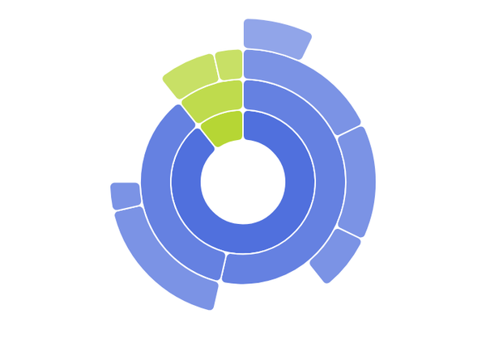
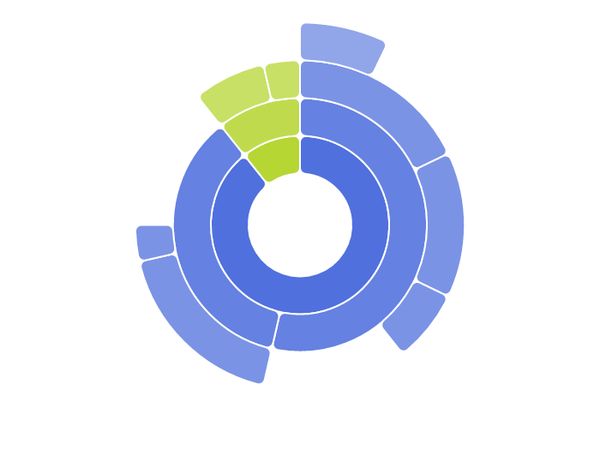
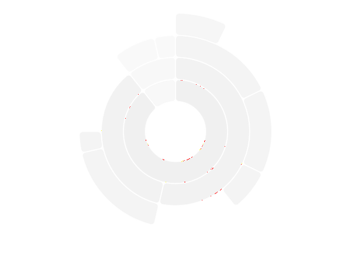
GEÇTİ · kapı farkı %0.013 · kapı SSIM 0.99815 · ham fark %0.483 · ham SSIM 0.99710 · aynı Gauss çekirdeği σ=0.8 · yapısal 1/1
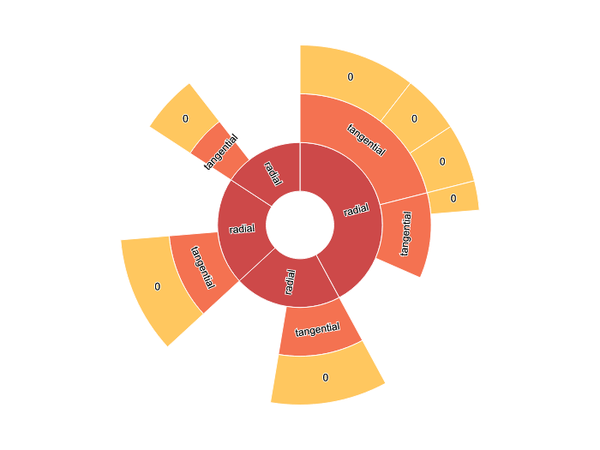
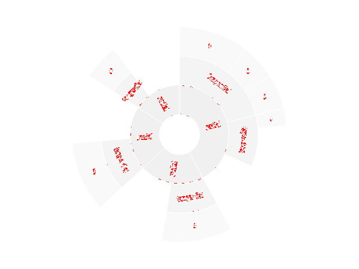
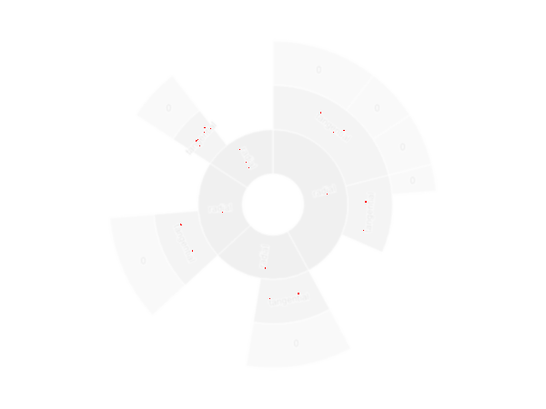
GEÇTİ · kapı farkı %0.000 · kapı SSIM 0.99986 · ham fark %0.012 · ham SSIM 0.99980 · aynı Gauss çekirdeği σ=0.8 · yapısal 1/1
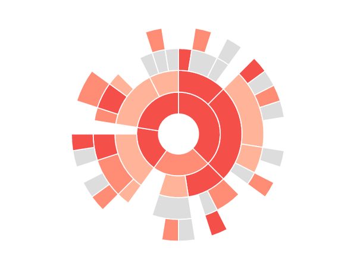
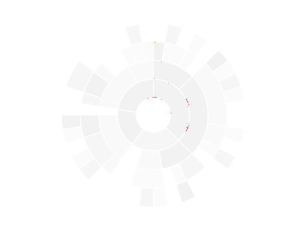
GEÇTİ · kapı farkı %0.007 · kapı SSIM 0.99846 · ham fark %0.480 · ham SSIM 0.99715 · aynı Gauss çekirdeği σ=0.8 · yapısal 1/1
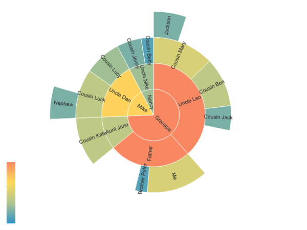
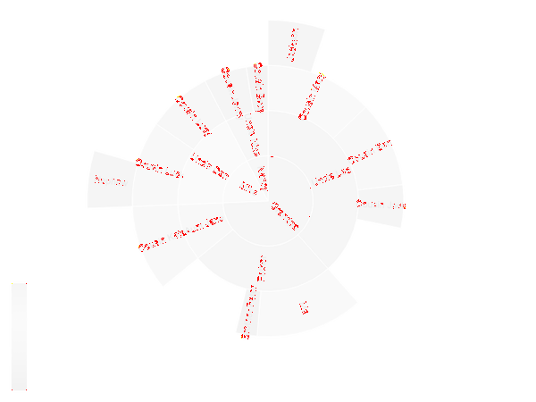
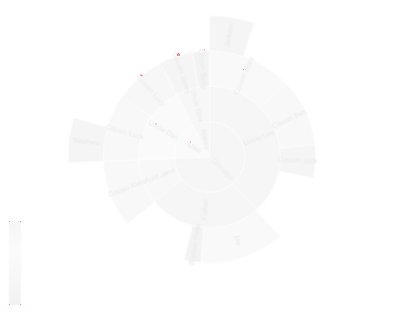
GEÇTİ · kapı farkı %0.003 · kapı SSIM 0.99811 · ham fark %0.538 · ham SSIM 0.99709 · aynı Gauss çekirdeği σ=0.8 · yapısal 1/1
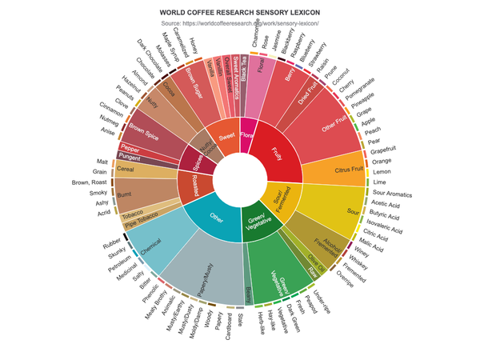
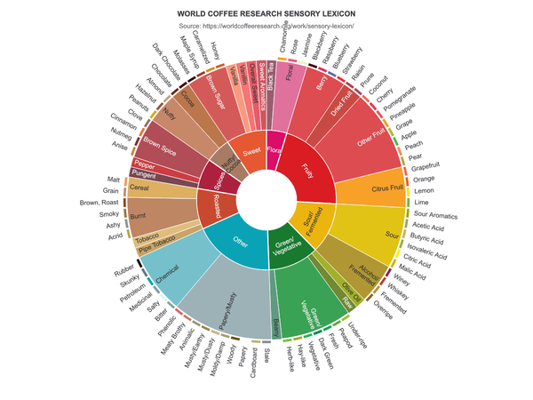
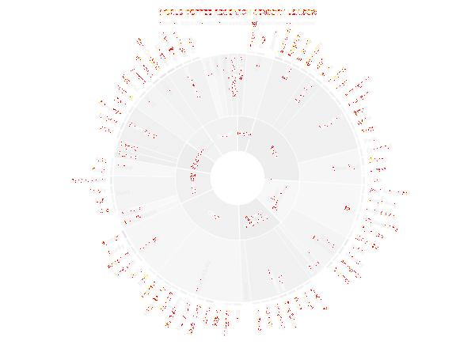
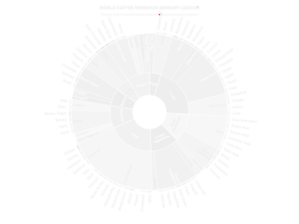
GEÇTİ · kapı farkı %0.166 · kapı SSIM 0.99401 · ham fark %1.286 · ham SSIM 0.99163 · aynı Gauss çekirdeği σ=0.8 · yapısal 1/1
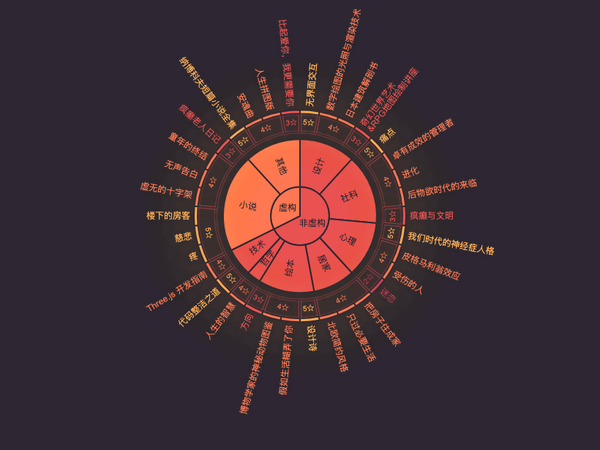
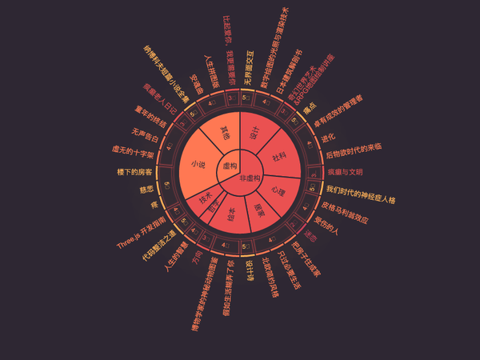
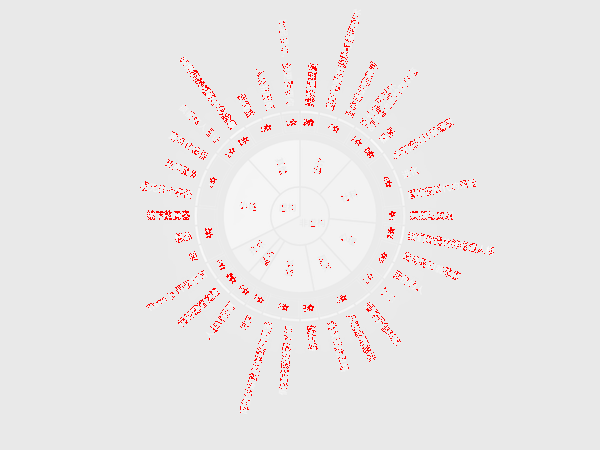
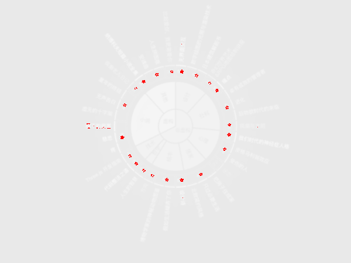